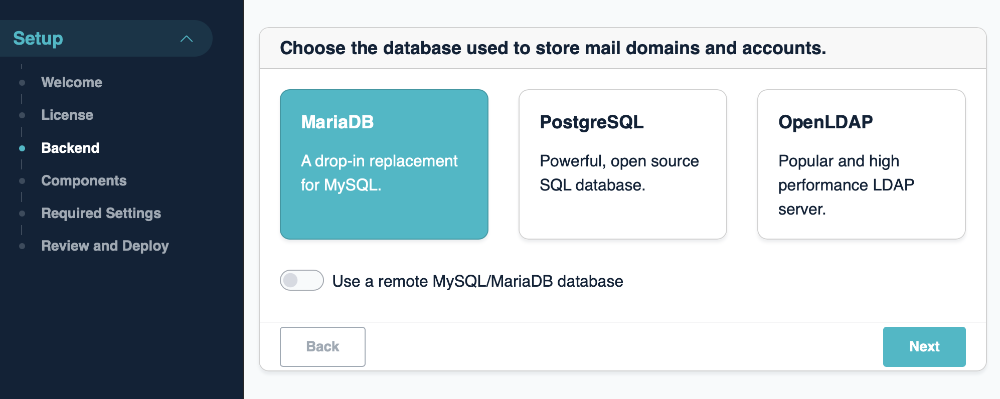
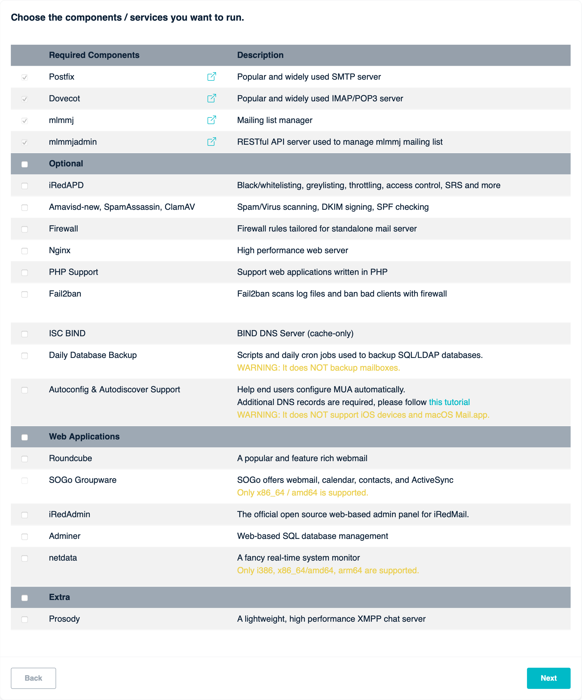
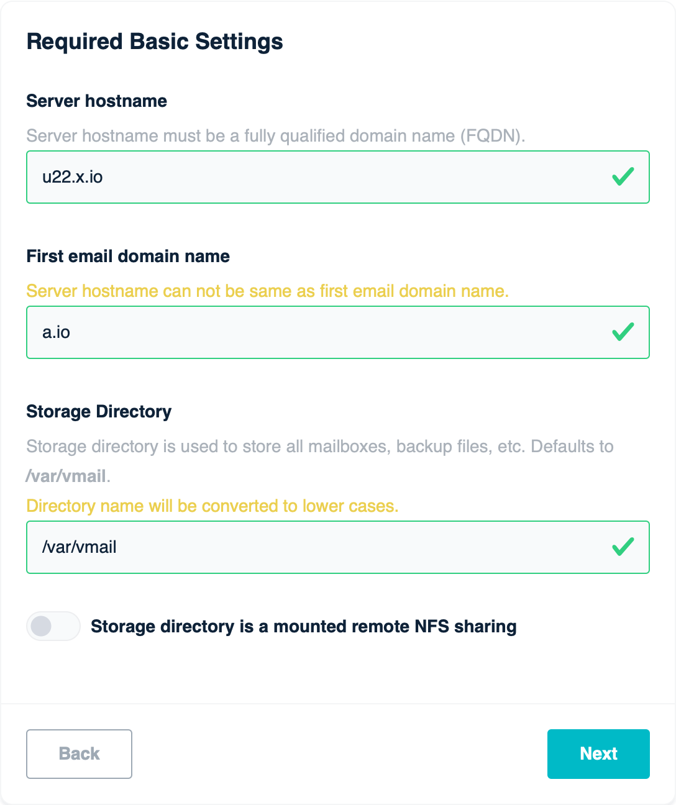
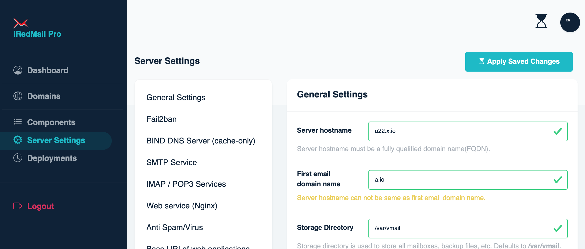

Attention
Check out the lightweight on-premises email archiving software developed by iRedMail team: Spider Email Archiver.
Attention
/root/.iredmail/kv/ on your server, also organized in file
/root/iRedMail/iRedMail.tips.iRedMail Enterprise Edition is a web-based, on-premises iRedMail server installer and admin panel.
With iRedMail Enterprise, it's easy to deploy a full-featured email server, and keep the server up to date with just few clicks on the web UI, also manage or tune server settings.
We encourage all users to deploy new iRedMail servers with iRedMail Enterprise Edition and keep the server up to date.
If you prefer classic downloadable shell-based iRedMail installer, you can find the installation guides here: Install iRedMail.
Warning
Many ISPs block network port 25 by default, it's used for communication between mail servers and it must be open, otherwise your server may be not able to receive or / and send emails. Please contact your ISP to make sure it's not blocked, or ask them to unblock.
Linux/BSD distribution releases supported by iRedMail Enterprise Edition:
| Distribution | Release Versions | Note |
|---|---|---|
| CentOS Stream | 9, 10 | 10 is recommended. |
| Rocky Linux | 9, 10 | 10 is recommended. |
| AlmaLinux | 9, 10 | 10 is recommended. |
| Debian | 11, 12, 13 | 12 is recommended. |
| Ubuntu | 20.04, 22.04, 24.04 | 24.04 is recommended. |
| OpenBSD | 7.7 |
If you need to install iRedMail on FreeBSD, please use the downloadable installer instead.
Notes:
php-imap package.4 GB memory for a low traffic production server
with spam/virus scanning enabled.iRedMail Enterprise Edition requires a license key, you can request a free one-month trial license or purchase one by signing up or login to our iRedMail Store.
Run commands below on the server to download iRedMail Enterprise Edition on Linux or OpenBSD, both x86_64/AMD64 and ARM64 are supported:
Attention
Please download it and save to /usr/local/bin/iredmail. This path is
hard-coded in systemd service file to start iRedMail Enterprise.
cd /usr/local/bin/
wget -O iredmail https://dl.iredmail.org/ee/iredmail-enterprise-latest-linux-amd64
chown root:root iredmail
chmod 0500 iredmail
cd /usr/local/bin/
wget -O iredmail https://dl.iredmail.org/ee/iredmail-enterprise-latest-linux-arm64
chown root:root iredmail
chmod 0500 iredmail
bash shell):cd /usr/local/bin/
wget -O iredmail https://dl.iredmail.org/ee/iredmail-enterprise-latest-openbsd-amd64
chown root:wheel iredmail
chmod 0500 iredmail
pkg_add bash
bash shell too):cd /usr/local/bin/
wget -O iredmail https://dl.iredmail.org/ee/iredmail-enterprise-latest-openbsd-amd64
chown root:wheel iredmail
chmod 0500 iredmail
pkg_add bash
Launch the installer:
/usr/local/bin/iredmail
8080 for initial deployment, please visit
http://your-server:8080 with your favourite web browser and go through the
wizard to finish the installation.8080 and runs on port
127.0.0.1:7793. Nginx is configured to proxy requests to it through URI
/admin/ (this URI can be customized on web UI during installation),
please visit httpS://your-server/admin/ to access it to manage your
iRedMail server.Below are screenshots of the installation wizard.
A backend is a SQL or LDAP database used to store mail domains and accounts. There're not big differences between them, so we suggest you choose the one you're familiar with for easier maintenance.
Since version v1.6.0, EE supports using a remote MySQL or MariaDB server as backend database. This can be done during initial setup, not after.

A component is a software (or software group, service) which implements some network service(s). On this page you can choose the components you want to deploy on your mail server.

Few settings are required to deploy a mail server.
Note: while typing, it will validate the input value, please fill and wait for 1-3 seconds until it finished the validation.

Attention
All account passwords are generated randomly during deployment, and stored
in files under /root/.iredmail/kv/ on your own server, also organized in
file /root/iRedMail/iRedMail.tips for your reference.
Review the settings:

Click Confirm and Deploy button to deploy immediately:

Once setup finished successfully, you should see info for login to admin panel. Please visit the URL and login with given username and password.
Note: This is a global admin which has all privileges.

After logged into admin panel, you can manage software components, tune server settings, manage mail accounts, etc.

